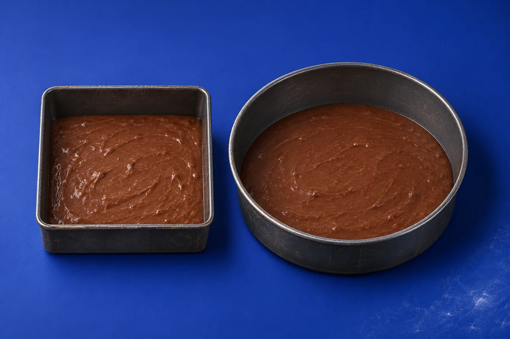
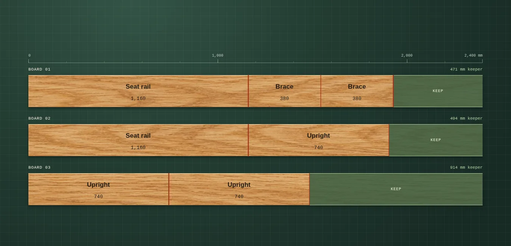
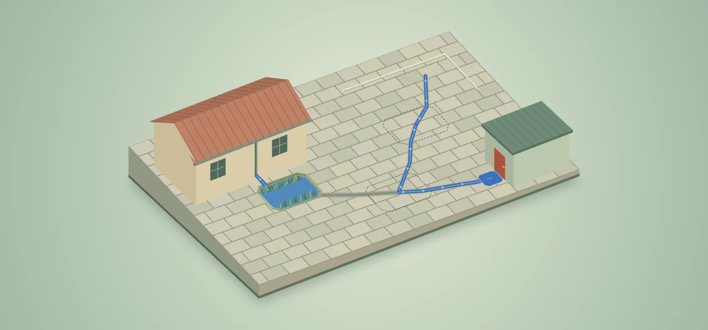

Design vault.
It could really be anything,
but it has to be something.
Plate 001Interactive study
Geological instrument
Open study ↗Faultline
Plate 002Interactive study

Fluorescence study
Open study ↗Night Cabinet
Plate 003Interactive study

Weaving study
Open study ↗Across the Warp
Plate 004Interactive study
Editing study
Open study ↗The Missing Paragraph
Plate 005Interactive study
Theatre sightlines
Open study ↗Behind the Pillar
Plate 006Interactive study

Tidal crossing study
Open study ↗The Vanishing Road
Plate 007Interactive tool

Baking pan calculator
Open tool ↗Same Depth
Plate 008Interactive tool

Woodworking cut planner
Open tool ↗Offcut
Plate 009Interactive study

Stormwater siting
Open study ↗